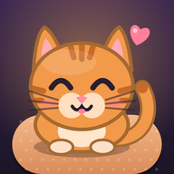

Pati Pansiyon
Slide · seat · purr
A cozy logic puzzle about a cat boarding house. Slide whole rows and columns to seat every cat: one cat per room, row and column, and no two cats side by side. 500 hand-checked levels, a daily puzzle, and an inn to furnish for the cats you meet along the way. Plays fully offline.
Bir kedi pansiyonunda geçen sıcacık bir mantık bulmacası. Satırları ve sütunları kaydırarak her kediyi yerine oturt: her odada, satırda ve sütunda bir kedi, hiçbir kedi yan yana değil. 500 bölüm, günün bulmacası ve yol boyunca tanıştığın kediler için döşeyeceğin bir pansiyon. İnternetsiz oynanır.